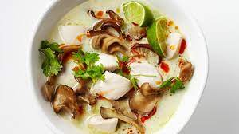

Tom Ka Gai

Description of the dish
The quintessential Thai soup.
Ingrediants
- 3/4 pound boneless, skinless chicken meat
- 3 tablespoons vegetable oil
- 2 (14 oz) cans of coconut milk
-
- 2 cups water
- 2 tablespoons minced fresh ginger root
- 4 tablespoons fish sauce
- 1/4 cup fresh lime juice
- 1/4 teaspoon cayenne pepper
- 1/2 teaspoon ground turmeric
- 2 tablespoons thinly sliced green onion
- 1 tablespoon chopped fresh cilantro
Steps
- Cut chicken into thin strips and saute in oil
for to 2 to 3 minutes until the chicken turns white.
- In a pot, bring coconut milk and water to a boil. Reduce heat.
Add ginger, fish sauce, lime juice, cayenne powder and turmeric.
Simmer until the chicken is done, 10 to 15 minutes.
- Sprinkle with scallions and fresh cilantro and serve steaming hot.